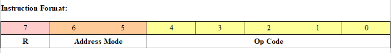
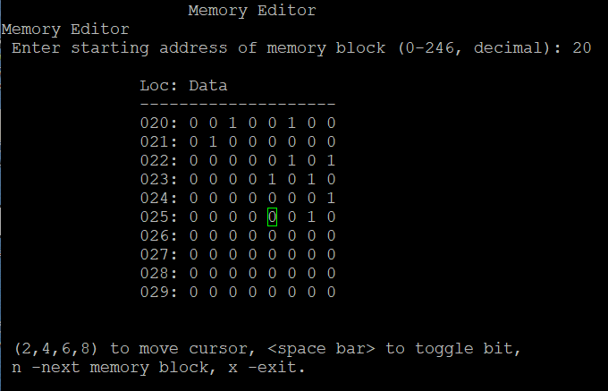
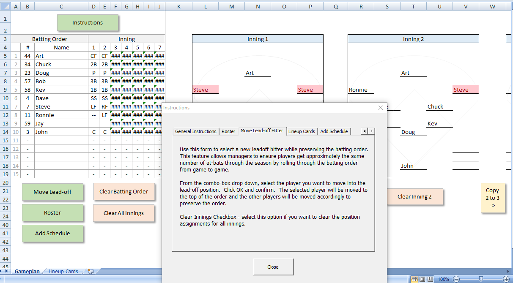

General Assembly Software Engineering Immersive Projects
Project 4
Jay's Fretboard - A Full Stack Development ProjectBackend - Node.js application written in Javascript, HTML, CSS, Postgres SQL database, with multiple APIs
Frontend - Interactive React application utilizing backend API calls. Application image files are stored on Amazon S3.
Project 3
This project is written in React. The application accesses four different endpoints from www.cocktaildb.com to provide recipes for adult beverages. Drinks are retrieved either at random, by ingredient, in alphabetical lists, or via user-enterred search. I partnered with a classmate on this project. Each of us developed features in our own Git branches and then merged and pushed code to our main repository on GitHub.
Project 2
A Node.js application written in Javascript, HTML, and CSS, with a Postgres SQL database on the backend.
Project 1
Written mostly in JavaScript, frivolous is trivia game. For this project I was mainly interested in working with arrays. I created three two-dimensional arrays for for trivia categories. Each element holds a question and an answer. There are only 15 questions per category. Each round, ten questions are randomly selected from the chosen category and placed in a questions array. The answer is randomly placed in one of four elements of an answers array. The other three elements are pulled at random from the remaining 14 elements in the category.
Simpson College Computer Science Project
The J8CM - My 8-bit computer model
While working on my B.A. in Computer Science back in the 1990s, I took a class in computer architecture and design. As a project for that class, I wrote a computer simulator based on some of the machines I'd worked on in the late 70s and through the 80s. I named it, Jay's 8-bit Computer Model (J8CM). The program was written using Borland C 4.0 on a Microsoft Windows computer. In July, 2021 I decided to port the code (I saved it on a 3.5 inch floppy disk) to gcc on Linux.
J8CM Machine Language
The J8CM is an accumulator-based model. As reflected by the instruction format, the J8CM contains 32 instructions, 4 addressing modes, and 2 general-purpose registers. Instructions and data can be loaded directly into the J8CM memory by setting the appropriate bits. Programs can be run completely, stepped through each instruction cycle, or at the fetch and execute levelß.
J8CM Assembly Language
Classic Travels LLC Website
A website for my mother-in-law's travel business. As the family IT guy, I setup the website.
Visual Basic for MS Excel
The first semester of my MBA program included a virtual course in Visual Basic for Microsoft Excel. My final project in that class was a program I could use to manage Little League baseball games. For me, it was important to give the boys opportunities to play different posisitions. I also wanted to give them approximately the same number of at-bats through the season while maintaining a batting order that produced the most runs.
At John Deere I developed a few tools in VBA. When we retired a system for the Torrance office, I exported three tables from MS SQL and created an Excel program to search the tables and provide sales information from the old system.
For the Waterloo location, I created Excel tools to manage asset location standards and Active Directory group memebership.